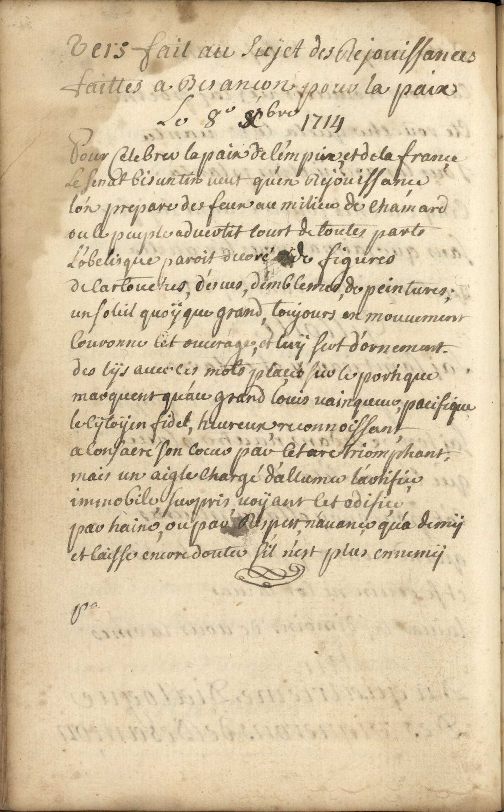

Vers faits au sujet des réjouissances
Vers faits au sujet des réjouissances faittes à Besançon pour la paix, le 8 Nbre 1714
Click a manuscript image to enlarge it. Cliquez sur une image du manuscrit pour l’agrandir.

Vers fait au sujet des rejouissances faittes a Besancon pour la paix le 8 Xbre 1714
Pour celebrer la paix de l'empire, et de la france,
Le Senat bisontin veut qu'en rejouissance,
l'on prepare des feux au milieu de chamard
ou le peuple aduertit court de toutes parts
L'obelisque paroit decoré de figures,
de cartouches, d'escus, d'emblemes, de peintures;
un soleil quoÿ que grand, toujours en mouuement
Couronne cet ouurage, et luÿ sert d'ornement.
des lÿs auec ces mots placées sur le portique
marquent qu'au grand louis vainqueur pacifique,
le cÿtoyin fidel, heureux, reconnoissant,
a consacré son coeur par cet arc triomphant,
mais un aigle chargé d'allumer l'artifice
immobile, surpris, uoÿant cet edifice
par haine, ou par respect n'auance qu'a demÿ
et laisse encore doutes sil n'est plus ennemÿ.